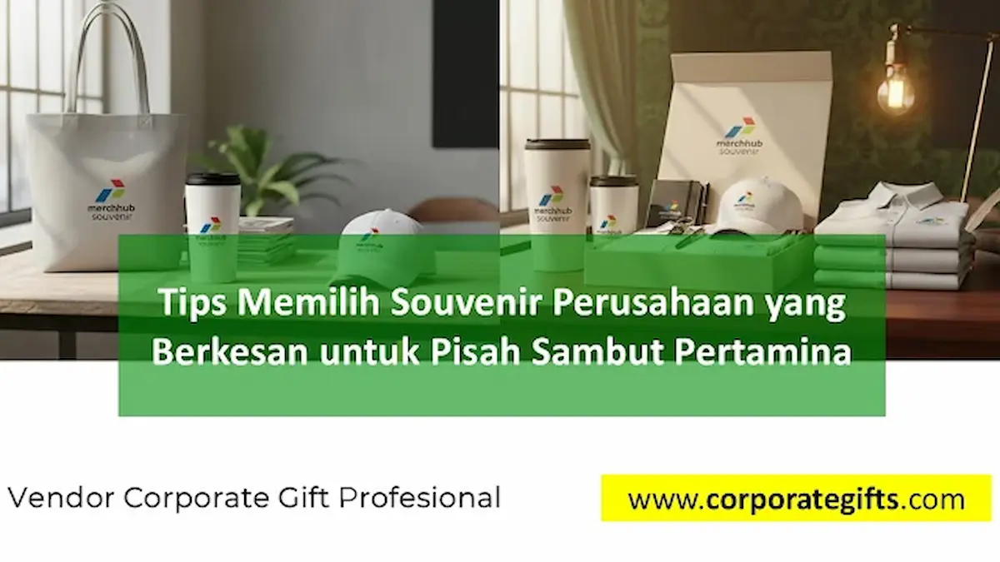

Corporate Gifts ID - Acara pisah sambut di lingkungan badan usaha milik negara (BUMN) seperti Pertamina bukan sekadar seremonial formalitas belaka. Momen transisi penugasan, mutasi wilayah kerja, maupun pelepasan purnatugas karyawan merupakan momentum penting untuk merawat ikatan emosional dan meneguhkan budaya apresiasi kerja.
Poin Kunci Memilih Souvenir Pisah Sambut Pertamina:
- Fungsionalitas Nyata: Memprioritaskan cinderamata bernilai pakai tinggi penunjang produktivitas kantor daripada sekadar benda pajangan statis.
- Personalisasi Eksklusif: Grafir nama pegawai, nomor induk karyawan (NIP), dan masa bakti memberikan rasa dihargai secara mendalam.
- Kepatuhan Standar Brand: Mengikuti panduan identitas visual korporat resmi dan etika protokoler Good Corporate Governance (GCG).
- Kemasan Elegan: Hardbox magnetik berbalut warna identitas perusahaan meningkatkan prestise pemberian secara signifikan.
Souvenir pisah sambut Pertamina adalah bentuk apresiasi dan kenang-kenangan eksklusif bagi karyawan yang mutasi, pensiun, atau baru bergabung. Pemilihan souvenir perusahaan yang tepat, seperti tumbler premium, powerbank, atau gift set elegan, tidak hanya berfungsi praktis tetapi juga memperkuat branding dan ikatan emosional antara karyawan dan perusahaan.
Kriteria Utama Souvenir Pisah Sambut BUMN
Agar cinderamata yang diberikan meninggalkan kesan positif yang tahan lama, panitia pengadaan perlu mempertimbangkan tiga kriteria dasar berikut:
- Fungsional dan Elegan: Souvenir sebaiknya bermanfaat dalam aktivitas sehari-hari di ruang kerja baru atau di rumah. Pilihan populer mencakup tumbler vacuum insulation berbahan stainless steel SUS304, powerbank fast charging custom, atau buku agenda kulit premium dengan finishing emboss logo yang rapi.
- Personal dan Bermakna: Hadiah dengan sentuhan personalisasi, seperti grafir laser nama penerima, tanggal penugasan, atau ucapan terima kasih resmi, terasa jauh lebih eksklusif secara emosional dan dihargai seumur hidup.
- Relevan dengan Citra Perusahaan: Souvenir wajib mencerminkan kredibilitas institusi energi nasional. Desain produk yang kokoh, modern, dan rapi mencerminkan etos kerja profesional serta keandalan yang menjadi jati diri korporasi.
Manfaat Strategis untuk Budaya Kerja & Retensi
Lebih dari sekadar kenang-kenangan seremoni, souvenir dalam acara pisah sambut berfungsi sebagai sarana komunikasi non-verbal yang menyampaikan rasa terima kasih tulus dari institusi. Melalui pengadaan cinderamata berkualitas, manajemen mampu:
- Menjaga Hubungan Baik Pascamutasi: Karyawan yang berpindah ke anak perusahaan atau unit kilang lain tetap membawa kebanggaan dan kenangan positif terhadap tim sebelumnya.
- Mempercepat Adaptasi Karyawan Baru: Sambutan hangat berupa welcoming kit eksklusif membuat talenta baru merasa diterima dengan penuh rasa hormat.
- Memperkuat Internal Employer Branding: Karyawan yang merasa dihargai dengan baik akan membagikan kesan positif tersebut kepada lingkungan sosial dan profesional mereka.

Pemberian cinderamata fungsional dengan sentuhan personalisasi grafir nama dan logo resmi instansi.
Rekomendasi Kategori Souvenir Berdasarkan Jenjang Jabatan
Kebutuhan souvenir pisah sambut tentu tidak bisa disamaratakan untuk seluruh golongan pegawai. Menyesuaikan spesifikasi paket hadiah dengan profil dan tingkat tanggung jawab penerima akan menciptakan rasa keadilan yang proporsional:
- Tingkat Staf & Officer Lapangan: Paket tumbler tahan panas/dingin 24 jam dipadukan dengan tas selempang kerja tahan air (water-resistant sling bag) atau powerbank berkapasitas besar sangat ideal untuk mobilitas lapangan tinggi.
- Tingkat Supervisor & Asisten Manajer: Gift set meja kerja eksklusif yang memuat agenda kulit organiser binder, pulpen rollerball berbobot mantap, dan flashdisk kartu elegan.
- Tingkat Manajer, General Manager, & Direksi: Paket executive hamper mewah yang mengombinasikan smart mug elektrik dengan pelat pemanas, leather travel organizer, serta plakat kristal atau kayu berukir pelat logam kuningan.
Tabel Perbandingan Paket Souvenir Pisah Sambut Pertamina
Berikut panduan komparasi spesifikasi paket cinderamata pisah sambut yang umum diaplikasikan di instansi korporat:
| Tingkatan Karyawan | Rekomendasi Produk | Sentuhan Personalisasi | Kemasan & Packaging |
|---|---|---|---|
| Staf & Officer | Tumbler stainless SUS304 + agenda kerja spiral A5 | Grafir nama pegawai & logo resmi instansi | Hardbox custom berhias pita warna korporat |
| Supervisor & Spv | Wireless powerbank fast charging + pulpen metal | Laser marking dual logo & monogram inisial | Exclusive magnetic rigid box dengan busa presisi |
| Manajer & VP | Desk lamp nirkabel + leather binder + vacuum bottle | Grafir pelat emas/perak & ucapan dedikasi masa bakti | Luxury velvet suede hardbox dengan kartu apresiasi |
| Direksi & Tamu VIP | Executive pen set + tas kulit dokumen + plakat kristal | Ukiran monogram personal & pelat logam etching | Kotak kayu jati pernis mewah dengan kunci pengait emas |
Catatan: Seluruh paket gift set pisah sambut dapat disesuaikan spesifikasinya sesuai dengan anggaran operasional dan standar ketentuan pengadaan instansi Anda di CorporateGifts.ID.
Tips Personalisasi dan Standardisasi Branding BUMN
Dalam memproduksi cinderamata instansi skala nasional, menjaga konsistensi identitas merek adalah hal mutlak. Pastikan beberapa detail teknis ini dipenuhi:
- Akurasi Warna Korporat (Corporate Colors): Warna biru, merah, dan hijau identitas Pertamina harus dicetak presisi mengacu pada kode Pantone atau CMYK panduan resmi.
- Teknik Grafir Laser yang Rapi: Untuk barang berbahan metal atau stainless steel, teknik laser marking memberikan ketahanan permanen yang tidak mudah pudar tergores.
- Kartu Ucapan Khusus (Personalized Greeting Card): Sertakan pesan terima kasih bertanda tangan rekan satu tim atau pimpinan unit kerja untuk menghadirkan kehangatan personal.
Kesimpulan
Pemilihan souvenir perusahaan yang strategis mampu mengubah acara pisah sambut menjadi momen apresiasi yang tak terlupakan. Produk yang memadukan sisi elegan, fungsionalitas, dan kesesuaian dengan identitas perusahaan dijamin akan meninggalkan kesan positif yang kuat, baik bagi rekan yang berpindah tugas maupun talenta baru yang baru bergabung.
FAQ: Pertanyaan Seputar Souvenir Pisah Sambut

Ditulis oleh: Sholikhatun Nikmah
Creative Product Designer & Bespoke Packaging ConsultantSpesialis kurasi souvenir VIP, gift set eksekutif, hampers korporat, dan cinderamata kemitraan strategis B2B di CorporateGifts.ID. Berpengalaman mendampingi instansi BUMN dan korporasi multinasional dalam pengadaan cinderamata seremonial bergengsi.
Lihat Profil Lengkap & Panduan Lainnya